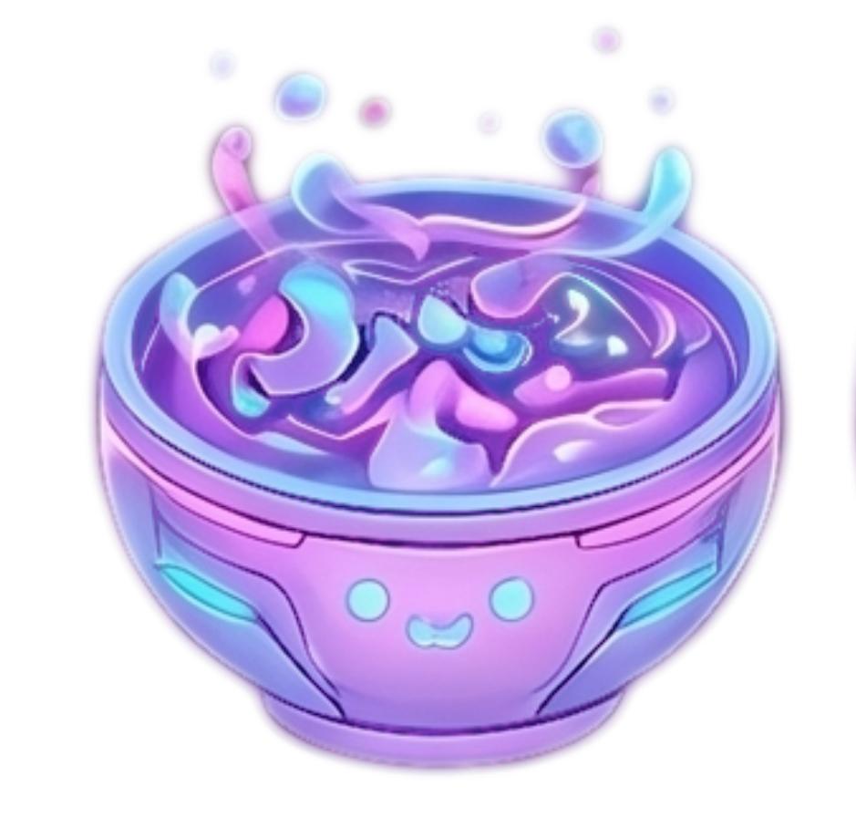
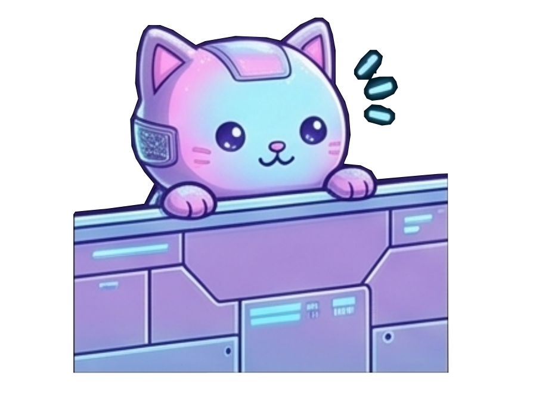
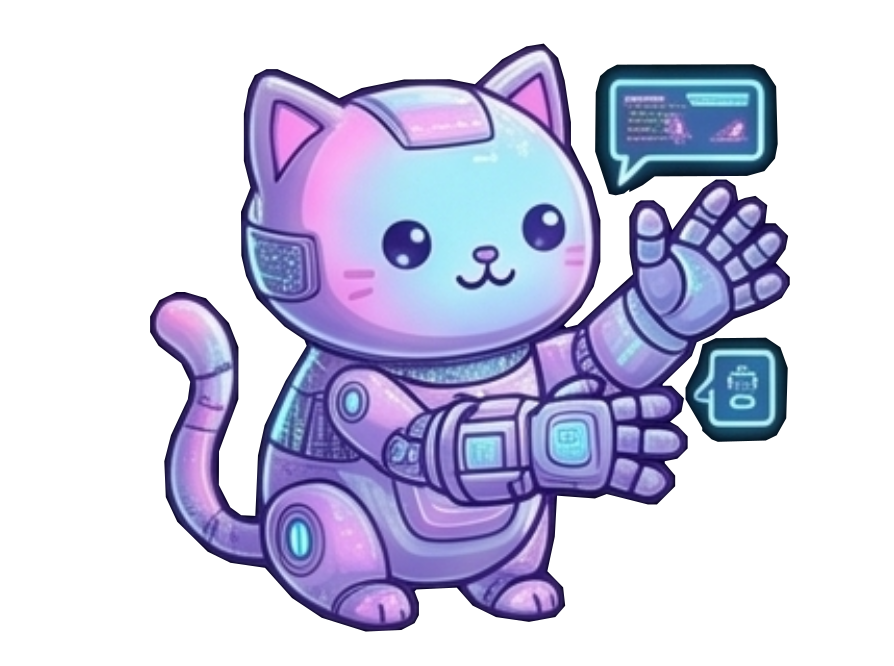
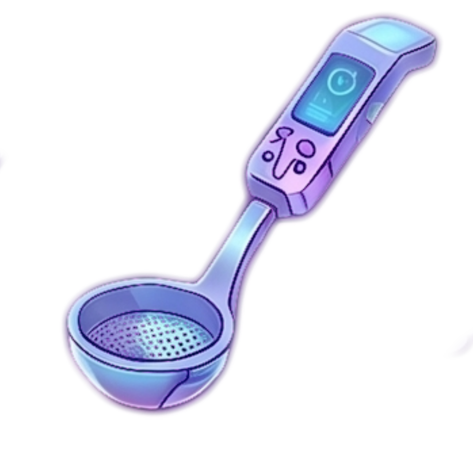
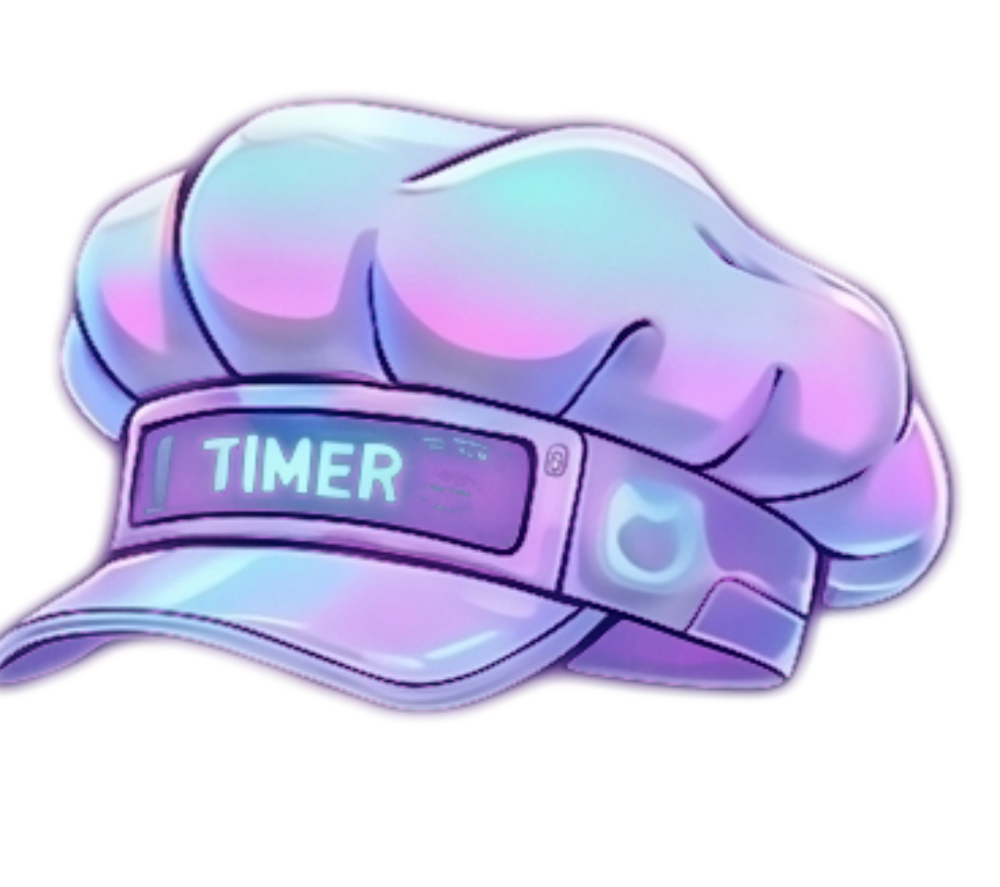
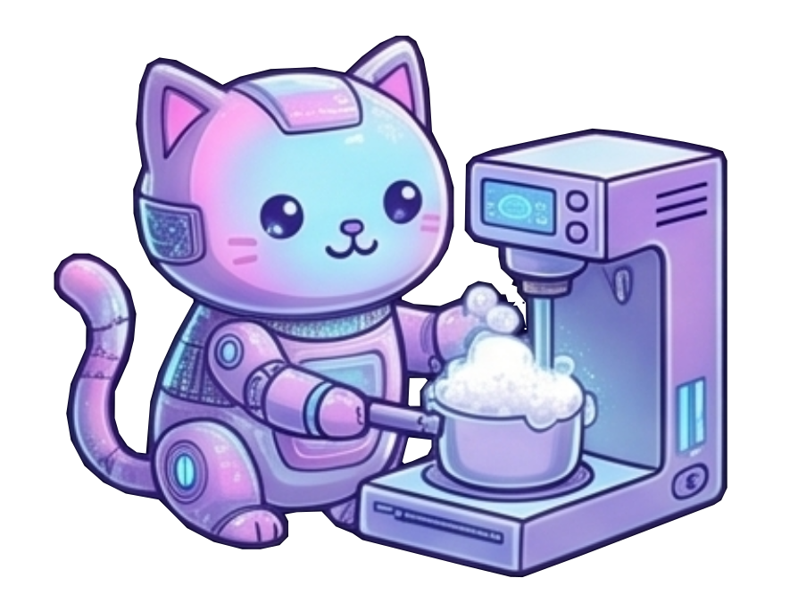
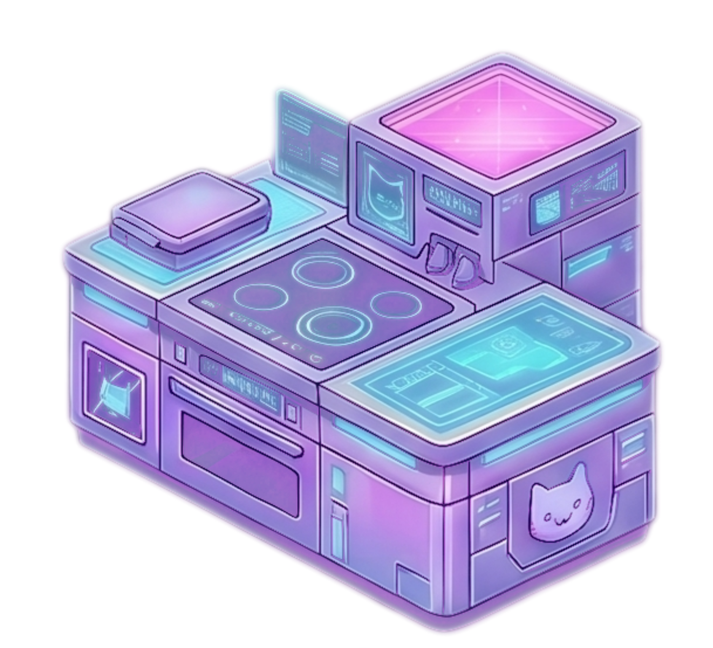
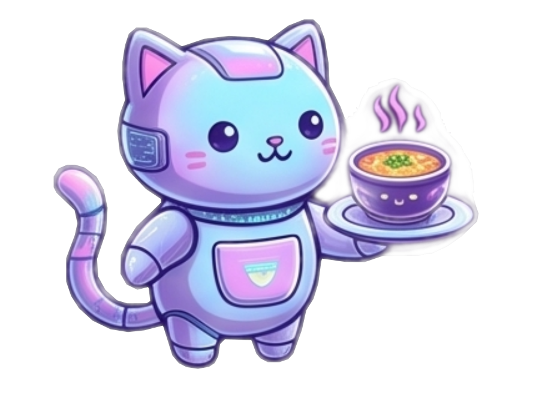

No isolated pots
Liquidity should be unified across participants instead of trapped inside separate venues and frontends.

NeonSoup turns Cardano DeFi into a glowing user-owned kitchen: open intents created on local devices, reviewed in wallets, and served without centralized order books, batchers, or exclusive frontends.


The README frames NeonSoup as a user-first, community-owned counterweight to siloed DeFi. These are the principles that shape the landing page and the product promise.
Liquidity should be unified across participants instead of trapped inside separate venues and frontends.

Users interact directly. There is no centralized order book or middle layer taking custody of the flow.

The dapp can suggest routes, but the user customizes, reviews, and signs the last-mile transaction.


NeonSoup should feel like a street food stall run by cypherpunks: friendly at the counter, hostile to capture, and built so anyone can inspect or fork the recipe.

Cardano L1 validates commitments, swap conditions, and trustless settlement.
Intent creation, matching coordination, and protocol UX run locally instead of inside a custom backend.
Flows become sealed transactions only at the last mile, where wallets review and sign.
Receipts and hashes are hints; cart items are confirmed only after normalized chain data provides evidence.

No silos. No middlemen. No exclusive frontends.
The README frames NeonSoup as direct user access to unified shared liquidity: the kawaii pot is not decoration, it is the protocol’s promise that everyone cooks from the same global soup.
NeonSoup’s README points to UDC and GCFS as the composability layer: intents can travel by URL, QR, NFC, and verified on-chain code distribution.
Reusable intent-based integrations let users swap anywhere: links, QR codes, NFC tags, and street-level handoffs.
Protocol libraries can be read, maintained, cryptographically verified, and composed without permission.
Bring your own distinctiveness into The Global Soup.
Open, modular intents are the product surface: users bring their own frontends, wallets, rules, and recipes to the same shared liquidity.
The current frontend is a developer tool for testing the P2P DeFi Kernel order book, GameChanger Wallet intents, and protocol UX before the production NeonSoup frontend lands. It is not production ready.
